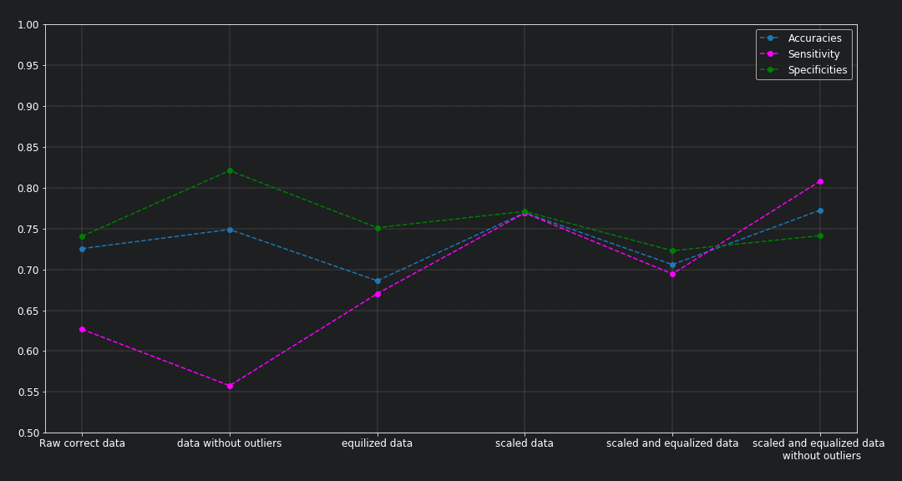
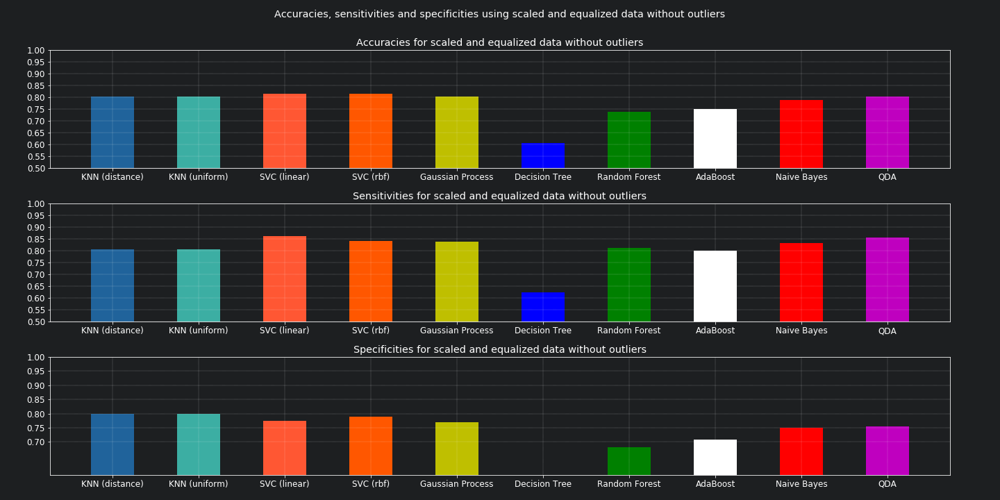

Diabetes detection using machine learning (part II)¶
In this 2nd post on detecting diabetes with the help of machine learning and using the Pima Indian diabetic database (PIDD), we will dig into testing various classifiers and evaluating their performances. We will also examine the performance improvements by the data transformations explained in the previous post.
The tested machine learning detection approaches¶
The idea of the detection in this context is distinguishing based on the provided features if the person has diabetes or not. This is a clear classification problem. For which we test the following classifiers:
K-Nearest_Neighbors (KNN)
K-Nearest Neighbors (distance weights)
K-Nearest Neighbors (uniform weights)
Support_Vector_Classifier (SVC)
Linear Support Vector Classifier
RBF Support Vector Classifier
Code and implementation¶
The code for this section is to be found in this script_. However, the whole project is available in the following Diabetes detection.
| Watch | Star | Fork | Download | Follow @SuperKogito |
|---|
The dataset can be Downloaded from here.
Evaluation techniques¶
When facing a typical machine learning classification problem, accuracy values can be deceiving and inaccurate. Therefore, other metrics such as the confusion matrix, Sensitivity and Specificity are used to provide a better assessment of the algorithms.
Consequently, in order to compare the performance of the data transformations and the observed improvements, a plot of their respective accuracy, sensitivity and specificity values is provided. As for the differences between machine learning approaches, a bars plot is provided to highlight the accuracy, sensitivity and specificity values of each approach. On top of all, we use the confusion_matrix to visualize the performance of an approach and its efficiency. In this matrix the rows represent the expected outcome and the columns correspond to the predicted ones as shown in the following:
Predicted outcome is 0 |
Predicted outcome is 1 |
|
|---|---|---|
Actual outcome is 0 |
True Negatives |
False Negatives (misses) |
Actual outcome is 1 |
False Positives (false alarms) |
True Positives |
Sensitivity and Specificity are two complementary metrics. Therefore, to judge which of these two metrics to prioritize is dependent on the nature of the problem. In order to have a better differentiation between these two, let us consider two classification systems:
First an airport system that based on a passenger behavior and emotions, decides whether the person is suspicious or not and according to the system output the authorities stop the passenger for a chat or not. So suspicious is outcome 0 (Negative) and not suspicious is outcome 1 (Positive): Now we can have a system that is perfect at detecting the none suspicious passengers but that is worthless in this scenario. If you let all the possible criminals through, you can simply not even have a system. So in this case, we prioritize the detection of True Negatives and as a side effect we will have some False Negatives (misses). This means, you achieve the goal of stopping and questioning every criminal but every now and then you will stop some peaceful passengers for some questions.
Now imagine some pre-selection system for some candidates. The idea here is to select candidates who full-fill certain requirements (features). Assume 0 for candidates that do not full-fill (Negative) the requirements and 1 for those who do (Positive). In this case, we need to do the opposite of the previous one. The system is supposed to detect candidates that are good at the expense of some candidates, that might not full-fill all the requirements, getting though. Therefore, we need to maximize True Positives count and accept the presence of some False Positive (False alarms).
Data transformations influence on results¶
In the previous post, the utility of some data transformations has been discussed as a method to improve the data quality and consequently improve the classification. the following plots, confirm this as we can clearly see that employing these data transformations (scaling, equalization and outliers removal) results overall in better accuracy, sensitivity and specificity.
{kind=link}
Classifiers comparison¶
In this section, we examine the performances of the aforementioned machine learning approaches approaches to diabetes detection. The plots and the results summary prove that the Support Vector Classifiers clearly results in the best prediction rates. In this case, we prioritize True Positives detection (sensitivity over simplicity) as we want to detect all of those having diabetes even if it means getting some False Positives (healthy patients diagnosed as diabetics) as that can be dismissed with some extra tests.
{kind=link}

---------------------------------------------------------------------------------------------------
Classifiers performances
---------------------------------------------------------------------------------------------------
KNN (distance weights) -> Accuracy: 0.80 | Sensitivity: 0.80 | Specificity: 0.80 | Average: 0.80
KNN (uniform weights) -> Accuracy: 0.80 | Sensitivity: 0.80 | Specificity: 0.80 | Average: 0.80
Linear SVC -> Accuracy: 0.82 | Sensitivity: 0.86 | Specificity: 0.78 | Average: 0.82
RBF SVC -> Accuracy: 0.82 | Sensitivity: 0.84 | Specificity: 0.79 | Average: 0.82
Gaussian Process -> Accuracy: 0.80 | Sensitivity: 0.84 | Specificity: 0.77 | Average: 0.80
Decision Tree -> Accuracy: 0.57 | Sensitivity: 0.59 | Specificity: 0.54 | Average: 0.56
Random Forest -> Accuracy: 0.68 | Sensitivity: 0.77 | Specificity: 0.63 | Average: 0.69
AdaBoost -> Accuracy: 0.75 | Sensitivity: 0.80 | Specificity: 0.71 | Average: 0.75
Naive Bayes -> Accuracy: 0.79 | Sensitivity: 0.83 | Specificity: 0.75 | Average: 0.79
QDA -> Accuracy: 0.80 | Sensitivity: 0.86 | Specificity: 0.76 | Average: 0.81
---------------------------------------------------------------------------------------------------
Conclusion¶
In these two blog posts, we investigated the utility of various machine learning approaches to diabetes detection and their efficiency. Moreover, various data transformations, such as scaling, equalization and outliers removal, have been proven to enhance the diabetes detection process.
References and Further readings¶
- 1
Pima Indians Diabetes Database, https://raw.githubusercontent.com/jbrownlee/Datasets/master/pima-indians-diabetes.names
- 2
Igor Shvartser, Jason Brownlee, Case Study: Predicting the Onset of Diabetes Within Five Years (part 1 of 3), March 2014 , https://machinelearningmastery.com/case-study-predicting-the-onset-of-diabetes-within-five-years-part-1-of-3/
- 3
Kaggle, Pima Indians Diabetes Database: Predict the onset of diabetes based on diagnostic measures, https://www.kaggle.com/uciml/pima-indians-diabetes-database
- 4
Kaggle kernals, Pima Indians Diabetes Database: Predict the onset of diabetes based on diagnostic measures, https://www.kaggle.com/uciml/pima-indians-diabetes-database/kernels